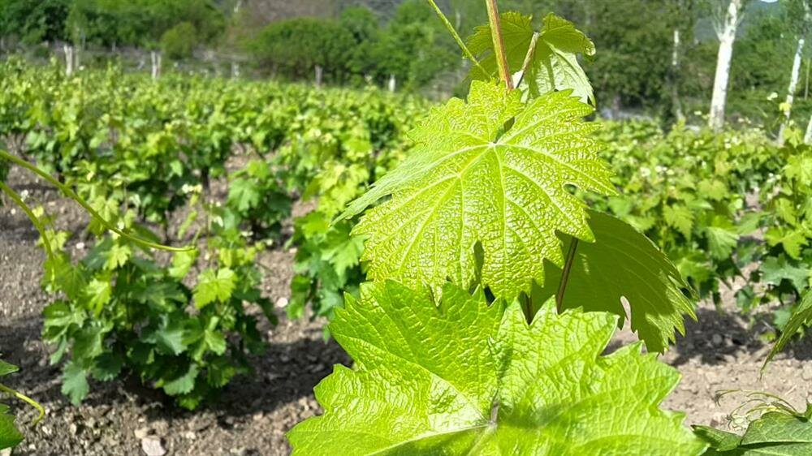
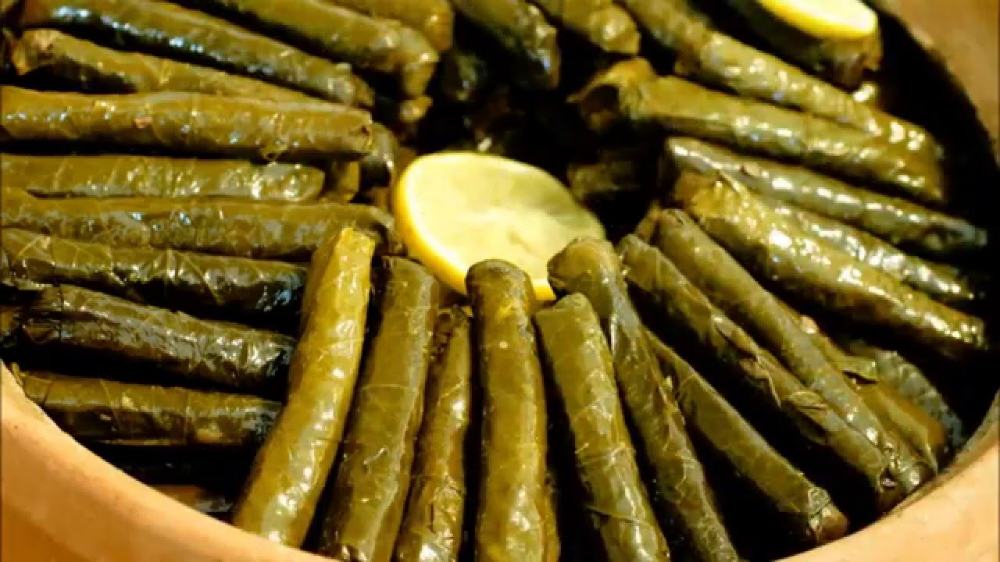

ERBAA YAPRAĞI
Narince üzüm çeşidi ülkemizin en kaliteli üzüm çeşitlerindendir. Yaprakları ise, ülkemizin en kaliteli ve en fazla üretilen salamuralık asma yapraklarından birisidir. Tokat Bölgesi’nde salamuralık asma yaprağının en fazla üretildiği yer Erbaa ilçesi olup, bölgede en önemli tarım sektörlerinden birisi durumundadır. Yurt içi ve yurt dışı piyasaya asma yaprağının ticari olarak yayılması bölgede üretilen yapraklar sayesinde olmuştur. Erbaa bölgesinde yetişen Narince asma yaprakları tüysüz, ince, yaprak ayası az yırtmaçlı, hoş bir tada sahiptir. Uluslararası ampelografik tanımlama sistemine göre yaprak ayasının şekli yuvarlak, sap cebi “U” şeklindedir. Bölgedeki yöntemlere göre salamura yapılmış Erbaa Narince yaprağı yarı geçirgen, sarımtırak yeşil renkte ve canlı bir görünüme sahiptir. Zeytinyağlı sarmada kullanılan yaprakların 100 gramına yaklaşık 27-30 adet yaprak girerken, etli dolmada ise 100 grama 40-45 adet salamura yaprak girmektedir. Üretim Metodu: Üretime esas ürün Erbaa ilçesi bağlarında yetiştirilen Narince üzüm çeşidine ait asma yaprağıdır. Asma yaprakları; asmaların çiçeklenme öncesinden itibaren 7-10 gün aralıklarla 5-6 dönemde hasat edilen nazik asma yapraklar (olgun yaprağın 1/3 veya 2/3 genişliğinde olan yaprak) kullanılır. Sürekli yeni gelişen taze asma yaprakları, sabah erken saatlerde sapları ile birlikte hasat edilir. Yapraklar hasat edilirken demetler halinde havalanma imkânı olan bez örtüler içerisine konulur. Hasat edilen yapraklar kızışmadan salamura işlemine geçilir. Salamura yapılacak yapraklar, son bir kez ayıklama işlemi sonrasında düzgün şekilde dizilmiş demetler ısıya dayanıklı 50 -100 litrelik plastik bidonlara dizilir. Yaprakların üzerine kanaviçe bez serilir. Bidonun üst kısmına salamura suyunun % 10 oranında iri salamura tuzu tartılarak eklenir. Paslanmaz çelik kazanlarda kaynatılan sıcak su, bidonların üzerine boşaltılır. Yapraklara salamura suyunun tam olarak nüfuz edebilmesi için mermer bloklar bırakılarak baskı yapılır. Yapraklar salamura suyu içerisinde 3-5 gün bekletilir. Salamuradan çıkarılan yapraklar plastik veya tahta kasalar üzerine serilerek sularını salmaları beklenir. Süzme işlemi tamamlanan yapraklar 1, 3, 5 veya 10 litrelik plastik ambalaj malzemeleri içerisine demetler halinde basılır. Ambalajlanan salamuralık yapraklar serin, havalanabilir ve ışık almayan bir ortamda pazarlama zamanına kadar bekletilir.
